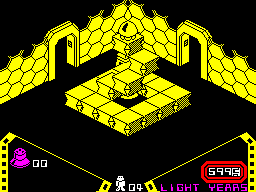
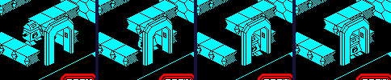
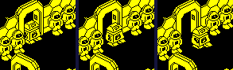
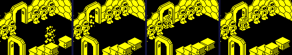

| Alien 8 | Rooms and doorways |
Alien 8's ship is Knight Lore's castle again: rooms numbered on a 16 by 16 grid, a row in the high four bits and a column in the low four, so that a doorway does not say where it leads -- the robot's move does the arithmetic. A room is built from its record every time he enters it, a doorway is two pillars, and a life starts where he last came in. This page follows each, and a real walk from one room into the next, run in the game's own code. The map itself is on the room structure page.
The 128 rooms of the room directory (ROOM02 on), by row (the number's high digit) and column (its low one):
Three sizes, from ROOM_SIZES by bits 6-7 of a room's third byte; the floor is 64 in all of them, and there is no ceiling:
| Size | Half-size in U | Half-size in V | Floor | U runs | V runs | Rooms |
|---|---|---|---|---|---|---|
| 0 | 64 | 64 | 64 | 64 to 192 | 64 to 192 | 92 |
| 1 | 32 | 64 | 64 | 96 to 160 | 64 to 192 | 26 |
| 2 | 64 | 32 | 64 | 64 to 192 | 96 to 160 | 10 |
ENTER_ROOM puts the valves of the room being left back in their places (see the chambers page) and calls BUILD_ROOM, which steps through the directory by each record's byte count until the number matches his room, takes the room's colour and size, and fills the records from record 4 up: first the backgrounds, a byte each up to an $FF -- a background (BACKGROUND_TABLE) is a list of eight-byte pieces, graphic, U, V, Z, the half-sizes, the height and the flags, each copied whole into a record -- and then the objects, in groups: a header (bits 3-7 the template, bits 0-2 how many less one) and a position byte for each copy. An object template (OBJECT_TABLE) is a list of five-byte pieces, graphic, half-sizes, height and flags, all put at the object's place: U = 72 + 16 times bits 0-2, V = 72 + 16 times bits 3-5, Z = the floor + 12 times bits 6-7. The record's byte count, not a marker, ends it. Then the valves lying in the room come into records 2 and 3, and ADJUST_PLYR_UVZ_FOR_ROOM_SIZE puts him in the doorway he came in by. It is Pentagram's builder, filling upwards where Pentagram's fills down.
Two template numbers are not templates. Template 31 moves on to a second page of the table, for templates 32 to 39 (12 rooms use it). And template 0 sets the placement nudge (PLACE_NUDGE) from the byte after it: bit 0 adds 8 to U, bit 1 adds 8 to V, and the rest is added to Z, for every object after it in the record. Pentagram's builder has the same store in bytes nothing reaches; in Alien 8 it is live. Counted in the level data: 42 nudges in 41 rooms, 41 of $30, 1 of $00 -- $30 lifting the objects after it 48, four levels, onto what the first groups built; a nudge of 0 puts them back on the floor. Nothing uses the half-cell steps.
Room $0D, read the way the builder reads it when this page was built, and checked against the records ENTER_ROOM made from it (run on its own in the simulator): every object stood where the table below puts it. Its backgrounds:
| Background | Its pieces (U, V, Z) | Records |
|---|---|---|
| 0 | 2 at (141, 197, 64), 3 at (115, 197, 64) | 4-5 |
| 3 | 2 at (59, 115, 64), 3 at (59, 141, 64) | 6-7 |
| 6 | 13 at (64, 76, 64), 13 at (64, 100, 64), 13 at (64, 156, 64), 13 at (64, 180, 64) | 8-11 |
| 7 | 13 at (76, 192, 64), 13 at (100, 192, 64), 13 at (156, 192, 64), 13 at (180, 192, 64) | 12-15 |
Its objects, in record order:
| Template | Graphics | Update routine | At (U, V, Z) | Nudge |
|---|---|---|---|---|
| 1 | 30 | DRAW_AT_L16_D9 | (120, 120, 76), (136, 120, 88), (136, 136, 100) | |
| 9 | 69 | CONVEYOR_PLUS_U | (104, 104, 64), (120, 104, 64), (136, 104, 64) | |
| 8 | 68 | CONVEYOR_PLUS_V | (152, 104, 64), (152, 120, 64), (152, 136, 64) | |
| 11 | 71 | CONVEYOR_MINUS_U | (152, 152, 64), (136, 152, 64), (120, 152, 64) | |
| 10 | 70 | CONVEYOR_MINUS_V | (104, 152, 64), (104, 136, 64), (104, 120, 64) | |
| 7 | 46 | SPIKES | (120, 136, 64) | |
| 0 | the nudge becomes $30 | |||
| 1 | 30 | DRAW_AT_L16_D9 | (120, 136, 112) | $30 |

Room $0D as the game draws it, in a simulator when this page was built.
Every doorway is one of six backgrounds, two pillars each: a first pillar, graphic 2, and a second, graphic 3, 26 units along the wall. The second only sets its drawing nudge (SECOND_PILLAR). The first (FIRST_PILLAR) does the work, every turn: it works out the middle of the doorway, 13 from itself along the wall, and keeps it in its own +$09 to +$0B, the step bytes a pillar never uses; CHK_PLYR_NEAR_ARCH then asks whether the robot's legs -- record 0 only -- are within 15 of that point across the doorway and 6 along it, and 4 in Z (IS_NEAR_TO). If they are, bit 0 of his flags is set: the walls are off for his next move, and the move's own exit check (HANDLE_EXIT_SCREEN) looks to see whether he has gone through. Near the doorway the pillar also puts a nudge of one unit towards the middle line in his +$0E or +$0F (NUDGE_ALONG_V, NUDGE_ALONG_U), which the walk (CALC_PLYR_DUV) adds to his next step, so he slides into line as he goes through. Unlike Knight Lore's and Pentagram's, the nudge is only given while he faces through the doorway.
The doorways in the rooms as built (the first pillars of all 300, read from the records after the game's own builder had run for every room):
| Wall | Backgrounds | Pillar Z | Leads to | Leaving writes | He arrives by | Doorways |
|---|---|---|---|---|---|---|
| low U | 3 | 64 | room - 1, in the row | U = $00 | high U | 62 |
| high U | 1, 10 | 64, 112 | room + 1, in the row | U = $FF | low U | 62 |
| low V | 2, 11 | 64, 112 | room - 16 | V = $00 | high V | 88 |
| high V | 0 | 64 | room + 16 | V = $FF | low V | 88 |
Two of the backgrounds, 10 and 11, are raised doorways, their floor at Z 112, reached by what the room builds under them. Their walls, high U and low V, are the only ones with raised doorways, so the doorway each leads to, in the opposite wall of the next room, is on the floor: he goes out 48 up and comes in at floor level.
HANDLE_EXIT_SCREEN runs inside the robot's move, after the move has been cut short and before it is made: not while he walks in, only with bit 0 set, which it clears. By the way he faces it jumps through SCREEN_MOVE_TBL to one of four routines (EXIT_LOW_U, EXIT_HIGH_U, EXIT_HIGH_V, EXIT_LOW_V), each asking whether this turn's move takes him wholly past the wall he faces. If it does, the coordinate he left by becomes a marker, 0 or $FF -- not a position but a note of the wall -- and his room goes down or up by 1 within the row (the column wraps round, the row stays) or by 16. The top four bits of +$0C get 4: four turns of walking on by himself, the walls and the controls off (Knight Lore's is three). Both his records are copied to the start records (START_LEGS) with their graphics kept at +$10 and replaced by 56, the appearing robot's first; two return addresses are dropped from the stack, and the game jumps back to MAIN_NEW_ROOM to build the room. There, ADJUST_PLYR_UVZ_FOR_ROOM_SIZE sees the marker and puts him in the doorway of the opposite wall, his inner edge 2 inside the wall's line, and ADJUST_PLYR_Z_FOR_ARCH gives him the arch's Z, finding it among records 4, 6, 8 and 10 by its U + V, $52, $38, $C8 or $AE: the code takes a room's doorways to be its first four backgrounds, which in every room they are. The code is Knight Lore's, instruction for instruction, and so are the four constants but one (Knight Lore's rooms); Pentagram decides the exit in the pillar instead (its doorways page).
In a simulator when this page was built: a game started, room $4E (one of the four start rooms) entered by the game's own restart, and the robot then put three units off the middle line of its doorway at high U, facing it -- his legs given graphic 21 without the mirror bit, facing 1. Walk (A) was held for 34 turns, and on turn 36 his death was started the way the game starts it (both records made graphic 48, the sparkle, and taken out of the collision tests). Nothing else was touched but his lives, topped up each turn. The start records begin with the room and place the page's restart gave them:
| Turn | Room | U | V | Z | Start record: room, U, V | What is going on |
|---|---|---|---|---|---|---|
| 0 | $4E | 160 | 131 | 64 | $4E, 131, 170 | |
| 7 | $4E | 181 | 131 | 64 | $4E, 131, 170 | |
| 8 | $4E | 184 | 131 | 64 | $4E, 131, 170 | in the doorway: +$07 bit 0; nudge -1 in V |
| 9 | $4E | 187 | 130 | 64 | $4E, 131, 170 | in the doorway: +$07 bit 0; nudge -1 in V |
| 10 | $4E | 190 | 129 | 64 | $4E, 131, 170 | in the doorway: +$07 bit 0; nudge -1 in V |
| 11 | $4E | 193 | 128 | 64 | $4E, 131, 170 | in the doorway: +$07 bit 0 |
| 12 | $4E | 196 | 128 | 64 | $4E, 131, 170 | in the doorway: +$07 bit 0 |
| 13 | $4F | 59 | 128 | 64 | $4F, 255, 128 | walks in by himself: 4 in +$0C |
| 14 | $4F | 65 | 128 | 64 | $4F, 255, 128 | in the doorway: +$07 bit 0; walks in by himself: 3 in +$0C |
| 15 | $4F | 68 | 128 | 64 | $4F, 255, 128 | in the doorway: +$07 bit 0; walks in by himself: 2 in +$0C |
| 16 | $4F | 71 | 128 | 64 | $4F, 255, 128 | in the doorway: +$07 bit 0; walks in by himself: 1 in +$0C |
| 17 | $4F | 74 | 128 | 64 | $4F, 255, 128 | in the doorway: +$07 bit 0 |
| 34 | $4F | 125 | 128 | 64 | $4F, 255, 128 | |
| 37 | $4F | 125 | 128 | 64 | $4F, 255, 128 | the sparkle, graphic 49 |
| 44 | $4F | 59 | 128 | 64 | $4F, 255, 128 | appearing, graphic 56; a life later, from the start records |
| 59 | $4F | 62 | 128 | 64 | $4F, 255, 128 | in the doorway: +$07 bit 0; walks in by himself: 3 in +$0C |
| 60 | $4F | 65 | 128 | 64 | $4F, 255, 128 | in the doorway: +$07 bit 0; walks in by himself: 2 in +$0C |
| 61 | $4F | 68 | 128 | 64 | $4F, 255, 128 | in the doorway: +$07 bit 0; walks in by himself: 1 in +$0C |
| 62 | $4F | 71 | 128 | 64 | $4F, 255, 128 | in the doorway: +$07 bit 0 |
He is in the doorway from turn 8, and the pillar nudges him onto its middle line, V 128, a unit a turn. On turn 13 he is in room $4F ($4E + 1, a chamber), at U 59: his inner edge two units inside that room's wall. The start records now hold him as he left: room $4F, U $FF -- the marker, not a position -- and the V of the middle line. He walks in for four turns by himself before the controls come back. His death runs the sparkle; when it is over both his records are empty, the main loop starts a life (NEW_LIFE) from the start records, and the same arrival code sees the same marker: on turn 44 he appears (graphics 56 to 63, PLAYER_APPEARING) in the doorway he came in by, at U 59, V 128. And since the start records were copied as he came in, they hold the walk in too: when he has appeared, on turn 59, he walks in by himself again for the four turns.

Room $4E, turns 1, 8, 11, 12: walking to the doorway, and sliding onto its middle line.

Room $4F, turns 14, 16, 19: coming in, and walking on by himself.

Room $4F, turns 38, 48, 60, 63: the sparkle, the robot appearing in the doorway, and walking in again.
For each of the 300 doorways, the room it leads to was worked out by the exit routines' arithmetic, the marker its exit writes put in the robot's record with that room, and ENTER_ROOM run on its own; then where it put him was compared with the arches of the room he arrived in. All 300 put him on the middle line of a doorway in the opposite wall, at its height -- a doorway that leads straight back. So every doorway in the game goes both ways and leads to a room that exists, and the arrival code's assumption, that the doorways are a room's first four backgrounds, always holds.